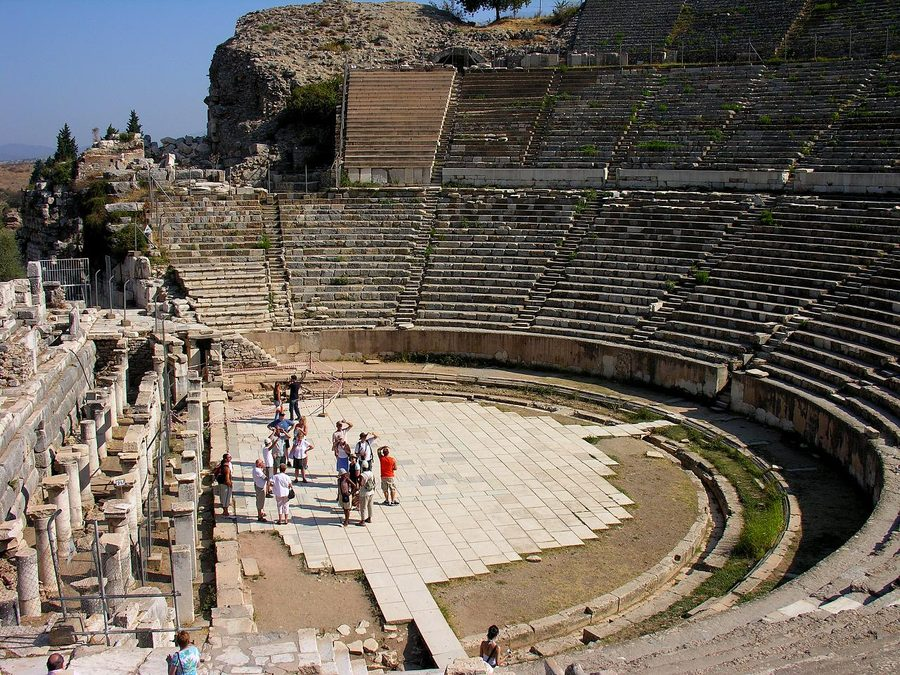

Qué pasaba en cada extremo en esta fecha

Teatro de Éfeso, hoyD. G. Jarvis · CC BY-SA 2.0
Desde · escrita en
Éfeso
Tercer viaje. Pablo lleva tiempo aquí y la familia de Cloe le informa de divisiones en Corinto. Piensa quedarse hasta Pentecostés.
→
 Tribuna de Corinto, hoyG. E. Koronaios · CC0
Tribuna de Corinto, hoyG. E. Koronaios · CC0
Para · destino
Corinto
Capital de Acaya, de ambiente muy inmoral. Cerca se celebraban los juegos ístmicos, que Pablo usa como ilustración.
Une los dos extremos
Áquila y Prisca conocieron a Pablo en Corinto (c. 50) y ahora saludan desde Asia, con la congregación que se reúne en su casa.